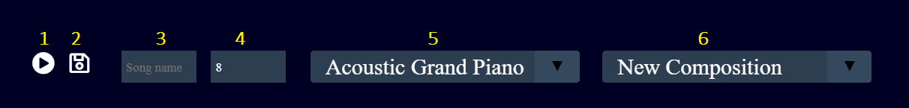

MIDI (short for Musical Instrument
Digital Interface) is a technical standard that describes a communications protocol,
digital interface, and electrical connectors that connect a wide variety of electronic
musical instruments, computers, and related audio devices. A single MIDI link can
carry up to sixteen channels of information, each of which can be routed to a separate
device.
MIDI carries event messages that specify notation, pitch, velocity, vibrato, panning,
and clock signals (which set tempo). For example, a MIDI keyboard or other controller
might trigger a sound module to generate sound produced by a keyboard amplifier. MIDI
data can be transferred via midi cable, or recorded to a sequencer to be edited or
played back.
A file format that stores and exchanges the data is also defined. Advantages of MIDI
include small file size, ease of modification and manipulation and a wide choice of
electronic instruments and synthesizer or digitally-sampled sounds.
MIORC is a web application that allows you to create an online
orchestra
You can chose from a list of over 70
instruments
and create your own
composition.
After you`ve created your song you can
start forming an
orchestra , with your
composionion and many others written by other
players .
The menu which will
help you navigate through the application . By clicking it ,
the menu will expand
Main menu opend
By opening it you will see 4 buttons (ATM)
1-Home button -
will take you back to the main page
2-Mixer button -
will take you to the mixer page
3-Conductor
button - will take you back to the orchestra page
4-Log-out/Log-in
- will allow you to login/logout
Mixer controls

Mixer main controls
Those will help you to
interact with your song. Here you will see 5 main controls
1-Play button - want
to hear how your
song
sound , just
click
it
2-Save button - will
save your song to our server
3-Song name - the
name which your song will be saved by
4-BPM - play is to
slow , rise the BPM ( Max of 10)
5-Instruments - bored
of the old piano try a new funky
instrument
Note sheet
Note sheet
The main actor of this
play. Here you can chose your notes
First you will
see the sqares , each represents a note , by clicking
it you cant liste the note , dont like it just click it
again
As you can see
the sheet is pretty small , what about that ? If you
want to make it bigger sipley add a note (square with a
* symbol) on the last collumn and BAM more notes
to add